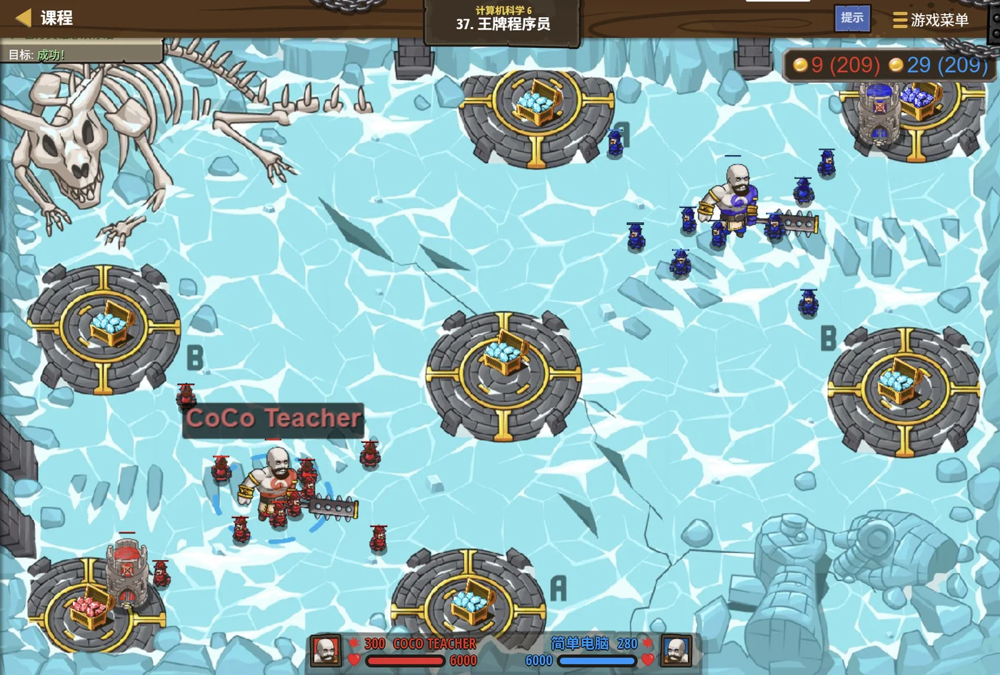

故事：工坊里的机械鹰需要统一管理——要能记名字、能飞、能报状态。
贺舒曼把蓝图铺在桌上：别把数据和方法分开写。
把它们一起装进"图纸"里，用的时候造一只就行。
你照着写了一个类：名字和血量放在里面，飞和报告也放在里面。
对了。她点头，这就是面向对象——数据管住自己，别人只跟你谈接口。
扣哒考级 · GESP C++ 六级 · 第 5 单元 | 云髓天阶 CLOUDMARROW STEPS
造物工坊 面向对象思想与类的创建
Classes & OOP

贺舒曼
镜中先知 · 你的向导
云天之上一座工坊里，墙上悬着一张巨大的发光蓝图。
图上画着一只机械鹰的完整结构：翼展、速度、攻击模块，全都标得清清楚楚。
而下方流水线上，一只只与蓝图一模一样的成品正滚出来，各自贴着不同的编号。
贺舒曼敲了敲蓝图：这张图是"设计"，那些鹰是"实物"。 同一份设计，可以造出无数只鹰——这就是"类"和"对象"。
图上画着一只机械鹰的完整结构：翼展、速度、攻击模块，全都标得清清楚楚。
而下方流水线上，一只只与蓝图一模一样的成品正滚出来，各自贴着不同的编号。
贺舒曼敲了敲蓝图：这张图是"设计"，那些鹰是"实物"。 同一份设计，可以造出无数只鹰——这就是"类"和"对象"。
贺舒曼 · 镜中先知
前面几课，我们的数据都是"散着放"的——一个结构体，或者几个变量。这一课换个思路：把"数据"和"操作这些数据的方法"绑在一起，做成一个整体。
这就是面向对象。C++ 里实现它的工具，叫"类"。
assets/illustrations/py-L6-05-01_creation_workshop.webp
【配图位】云中工坊的内部：墙面上悬挂着一张巨大的发光蓝图，图上画出机械鹰的结构标注（翼展、速度、攻击模块等用抽象符号表示）；下方工作台上并排站着三只外形完全一致、但贴着不同编号铭牌的成品机械鹰；一名戴眼镜的先知正把蓝图递向学徒，另一只手比着流水线的方向。
0 单元导语与目标
Unit Overview
0.1 学习目标
1学完这个单元，你将能……
- 说清"类"和"对象"的区别
- 定义一个类，并创建它的对象
- 分清
public与private - 写出构造函数（含带参数的）与析构函数
- 说出"封装"的好处
- 读懂继承与虚函数（多态）的代码
2对标 GESP 考纲（C++ 六级）
- 理解面向对象的基本思想
- 掌握类的定义、成员的访问控制
- 掌握构造函数与析构函数的写法与调用时机
- 理解封装的意义
- 了解继承与多态（虚函数）的基本用法
- 考核目标：能读懂面向对象代码的输出、能补全构造函数
0.2 考纲对照
| 本单元小节 | 对应考纲条目 | 真题常考形式 |
|---|---|---|
| 1 从蓝图到产品 | 面向对象思想 | 类与对象的关系 |
| 2 定义一个类 | 类的定义与访问控制 | 成员能不能直接访问 |
| 3 构造函数与析构函数 | 构造与析构 | 调用时机、带参构造的写法（必考） |
| 4 封装 | 封装 | 私有成员怎么访问 |
| 5 继承与多态 | 继承与虚函数 | 输出哪个版本的函数（必考） |
1 从蓝图到产品
From Blueprint to Product
1.1 为什么要"类"
先看看"结构体"不够用的地方
C++
// 用结构体表示一只机械鹰
struct Eagle {
string name;
int speed;
int hp;
};
// 结构体只能"装数据"，不能"带动作"。
// 想让鹰飞一下、掉一点血，只能在外面写函数：
void fly(Eagle &e) {
e.hp -= 5;
cout << e.name << " 飞了一圈，血量 " << e.hp << endl;
}
// 问题：数据和行为是分开的。
// · 谁都可以直接改 e.hp —— 想绕过 fly 就绕过去了
// · 函数一多，得记住"哪个函数管哪只鹰"，很累两个痛点
① 数据和操作它的是分开的，用起来得两边都记着；
② 数据完全敞开，谁都能随手改，改坏了也查不出来
② 数据完全敞开，谁都能随手改，改坏了也查不出来
面向对象的核心想法：
把"数据"和"操作这些数据的函数"打包成一个整体，
这个整体就叫类（class）。
而且还可以给数据加上"门禁"—— 不让外面直接碰，只能通过类自己提供的函数来操作。
这样一来，数据从哪来、被谁改的，全都管得住了。
而且还可以给数据加上"门禁"—— 不让外面直接碰，只能通过类自己提供的函数来操作。
这样一来，数据从哪来、被谁改的，全都管得住了。
1.2 类与对象的关系
一句话分清"类"和"对象"：
类 = 蓝图（设计图）；对象 = 按这张图造出来的实物。
类只描述"应该长什么样、能做什么"—— 它本身不占内存、也不是任何一只具体的鹰。
对象才是真正存在的那一只—— 它有自己具体的属性值（这只鹰叫"小灰"、速度 80）。
一张蓝图可以造出无数个对象—— 它们的"结构"相同，但"内容"各不相同。
类只描述"应该长什么样、能做什么"—— 它本身不占内存、也不是任何一只具体的鹰。
对象才是真正存在的那一只—— 它有自己具体的属性值（这只鹰叫"小灰"、速度 80）。
一张蓝图可以造出无数个对象—— 它们的"结构"相同，但"内容"各不相同。
对照着看
C++
class Eagle { // ★ 这是"类"——蓝图
...
};
Eagle a; // ★ 这是"对象"——照蓝图造的一只
Eagle b; // ★ 这是另一个对象——同一张图造的又一只
a.name = "小灰";
b.name = "小白";
// 它们结构一样，但内容各管各的最容易记的一句话
类是一种"类型"，对象是这个类型的"变量"
就像
就像
int 是类型、int x; 里的 x 是变量——Eagle 是类型、Eagle a; 里的 a 是变量2 定义一个类
Defining a Class
2.1 class 的基本写法
把一个"计数器"做成类
C++
class Counter {
public: // ★ 冒号，不是分号
int value; // 成员变量（数据）
void add() { // 成员函数（行为）
value++;
}
void reset() {
value = 0;
}
}; // ★ 末尾这个分号不能丢！
int main() {
Counter c; // 创建对象
c.value = 10; // 用点号访问成员
c.add(); // 调用成员函数
cout << c.value << endl; // 11
return 0;
}OUTPUT 11
三处格式要求 ①
三处格式要求 ①
class 开头；② 成员写在花括号里；
③ 右大括号后必须有分号——和结构体一样
类和结构体，其实非常像。
在 C++ 里，
唯一的区别是"默认的访问权限"：
所以写类的时候，
struct 和 class 几乎是一回事——
它们都能装数据、都能带函数、都能继承。唯一的区别是"默认的访问权限"：
struct 里默认是 public（外面能直接访问）；class 里默认是 private（外面不能直接访问）。所以写类的时候，
public: 那一行基本是必须写的。
2.2 访问控制：public 与 private
| 关键字 | 含义 | 谁能访问 |
|---|---|---|
public: | 公开的 | 类里面的成员、外面的使用者，都能访问 |
private: | 私有的 | 只有类自己的成员函数能访问 |
protected: | 受保护的 | 类自己 + 它的派生类能访问 |
私有成员外面碰不到
C++
class Base {
private:
int value = 10; // 私有
};
class Child : public Base {
public:
int get() {
return value; // ★ 编译错误！
} // value 是 Base 的私有成员，
}; // 派生类也不能直接访问
// 正确做法一：把 value 改成 protected
// 正确做法二：Base 提供一个 public 的 getValue() 方法，
// 派生类通过这个方法来读关键区别
所以"派生类能不能直接访问基类成员"要看清是私有还是受保护
private 连派生类都不给看；protected 给派生类看所以"派生类能不能直接访问基类成员"要看清是私有还是受保护
3 构造函数与析构函数
Constructors & Destructors
3.1 创建时就初始化好
构造函数：名字和类名一样，没有返回值
C++
class Student {
public:
int age;
Student() { // ★ 构造函数：名字 = 类名，没有返回类型
age = 18; // 创建对象时自动执行
cout << "新建了一个学生" << endl;
}
~Student() { // ★ 析构函数：名字前面加 ~
cout << "这个学生被销毁了" << endl;
}
};
int main() {
Student s; // ← 这里自动调用构造函数
cout << s.age << endl; // 18
return 0; // ← 这里自动调用析构函数
}OUTPUT
新建了一个学生
18
这个学生被销毁了
两个函数都不用你手动调用——一个在创建时、一个在销毁时自动执行
新建了一个学生
18
这个学生被销毁了
两个函数都不用你手动调用——一个在创建时、一个在销毁时自动执行
两个函数的四个特点：
① 名字——构造函数和类名完全一样；
析构函数是类名前面加一个
② 没有返回类型——连
③ 自动调用——构造函数在创建对象时， 析构函数在对象销毁时（比如函数结束、
④ 可以重载——构造函数可以有多个版本（参数不同）； 析构函数只能有一个。
~；② 没有返回类型——连
void 都不写；③ 自动调用——构造函数在创建对象时， 析构函数在对象销毁时（比如函数结束、
delete 时）；④ 可以重载——构造函数可以有多个版本（参数不同）； 析构函数只能有一个。
一条很容易被考到的规则：一旦自己写了构造函数，编译器就不再生成默认的。
如果你只写了
解法：要么再补一个无参的构造函数，要么创建对象时就把参数写上。
所以"编译器会自动生成无参构造函数"这句话， 只有在"你一个构造函数都没写"的时候才成立。
Student(int x) 这一个带参数的构造函数，
那么 Student s; 这种"不带参数"的写法就会编译报错——
因为编译器看到你定义了构造函数，就不会再自动生成那个无参的默认版本了。解法：要么再补一个无参的构造函数，要么创建对象时就把参数写上。
所以"编译器会自动生成无参构造函数"这句话， 只有在"你一个构造函数都没写"的时候才成立。
3.2 带参数的构造函数与初始化列表
创建对象时就给好参数
C++
class Student {
public:
string name;
int age;
Student(string n, int a) { // 带参数的构造函数
name = n;
age = a;
}
};
Student s("小明", 12); // ★ 创建时就把参数传进去
cout << s.name << " " << s.age << endl; // 小明 12
// 更推荐的写法：初始化列表
class Point {
public:
int x, y;
Point(int a, int b) : x(a), y(b) {} // ★ 冒号后面直接初始化
};两种写法效果一样
在函数体里赋值，或者用初始化列表（冒号后面那一串）
初始化列表更高效——它是"直接构造"，而不是"先默认构造再赋值"
初始化列表更高效——它是"直接构造"，而不是"先默认构造再赋值"
派生类怎么调用基类的带参构造函数
C++
class Machine {
protected:
string id;
public:
Machine(string s) : id(s) {} // 基类的带参构造函数
};
class Robot : public Machine {
int level;
public:
// ★ 在初始化列表里"点名"调用基类的构造函数
Robot(string s, int n) : Machine(s), level(n) {}
// ↑ 这里写基类名(参数)，不是 id(s)！
};
Robot r("R-01", 3); // 先构造基类部分（id = "R-01"），再构造自己的 level横线上该填
注意 不能写
Machine(s)
调用基类的构造函数，写法是"基类名(参数)"注意 不能写
id(s)（那是成员变量，不是构造函数）；
也不能写 Machine::id(s)（那是在访问名叫 id 的成员）图 2（SVG）：构造与析构的顺序
4 封装
Encapsulation
4.1 把数据藏起来
把成员变量设成 private，对外只留方法
C++
class Account {
private: // ★ 余额藏起来
int balance;
public:
Account(int b) : balance(b) {}
void deposit(int x) { // 存钱：提供接口
if (x > 0) balance += x; // ★ 顺便做合法性检查
}
int getBalance() const { // 查余额：只读接口
return balance;
}
};
Account a(100);
a.deposit(50);
cout << a.getBalance() << endl; // 150
// a.balance = 99999; // ✘ 编译错误！私有成员外面碰不到OUTPUT 150
封装的三个好处 ① 外面改不了余额，只能走
② 可以在方法里做检查（比如负数不让存）；
③ 内部怎么实现，外面不用知道
封装的三个好处 ① 外面改不了余额，只能走
deposit；② 可以在方法里做检查（比如负数不让存）；
③ 内部怎么实现，外面不用知道
4.2 通过方法访问
封装的本质：给数据装一扇门。
数据藏在屋里（
这样做的好处是：既然所有改动都要经过这扇门， 你就可以在门口设一个"检查员"—— 看看这次改动合不合理、要不要记录一笔。
而如果数据完全敞开（全 public）， 谁都能随手改，出了问题根本查不出是谁改的。
private），
外面的人不许翻墙，只能从门（public 的方法）进出。这样做的好处是：既然所有改动都要经过这扇门， 你就可以在门口设一个"检查员"—— 看看这次改动合不合理、要不要记录一笔。
而如果数据完全敞开（全 public）， 谁都能随手改，出了问题根本查不出是谁改的。
打个比方：
封装就像一台封闭的机器——内部齿轮怎么转，外面看不见；
但你给了几个接口（开关、进料口、出料口）。
你要它干活，就走接口；它内部怎么实现，你不需要知道，也不该去戳。
好处是：哪天它内部换了零件，只要你没改接口，用它的代码一行都不用动。
你要它干活，就走接口；它内部怎么实现，你不需要知道，也不该去戳。
好处是：哪天它内部换了零件，只要你没改接口，用它的代码一行都不用动。
assets/illustrations/py-L6-05-02_encapsulation.webp
【配图位】一只机械石人立在工坊中央，胸口的水晶核心与内部齿轮通过半透明的外壳隐约可见（表示"内部存在但被包住"）；外壳已完全封死、没有可开启的缝隙，只有侧面三条小滑道作为接口（分别刻着"存""取""查"的抽象记号）；一名戴眼镜的先知正把手伸向其中一条滑道操作。
5 继承与多态
Inheritance & Polymorphism
5.1 继承：在蓝图上扩展
派生类自动拥有基类的成员
C++
class Animal { // 基类（父类）
public:
string name;
void eat() { cout << name << " 在吃东西" << endl; }
};
class Cat : public Animal { // ★ 冒号 + public + 基类名 = 继承
public:
void meow() { cout << name << " 喵了一声" << endl; }
};
Cat c;
c.name = "小白"; // ★ 从 Animal 继承来的
c.eat(); // ★ 也是继承来的
c.meow(); // 自己新加的
// 结果：Cat 不用重写 name 和 eat，就都有了。继承的好处
共同的成员写在基类里，派生类只管加自己特有的部分——
不用重复写、改起来也只改一处
不用重复写、改起来也只改一处
5.2 虚函数与多态
同一个调用，不同对象给出不同结果
C++
class Animal {
public:
virtual void speak() { // ★ virtual 关键字
cout << "Animal ";
}
virtual ~Animal() = default; // 虚析构函数（重要！）
};
class Cat : public Animal {
public:
void speak() override { // ★ override 表示"我重写了基类的"
cout << "Cat ";
}
};
int main() {
Animal *p = new Cat(); // 基类指针，指向派生类对象
p->speak(); // ★ 输出 "Cat "，不是 "Animal "
delete p;
return 0;
}OUTPUT Cat
为什么不是 Animal？ 因为
这就叫"多态"：同一个调用，因对象不同而有不同表现
为什么不是 Animal？ 因为
speak 是虚函数——程序会在运行时看指针实际指向哪个对象，
然后调用那个对象自己的版本这就叫"多态"：同一个调用，因对象不同而有不同表现
三句话理解多态：
① 基类的函数前面加
② 派生类里写一个同名、同参数的函数（可以标
③ 用"基类指针/引用"去调用时， 程序会看它实际指的是哪个对象，去调那个对象的版本。
关键差别： 如果没有
virtual，
它就变成了"虚函数"；② 派生类里写一个同名、同参数的函数（可以标
override），
这叫"重写"；③ 用"基类指针/引用"去调用时， 程序会看它实际指的是哪个对象，去调那个对象的版本。
关键差别： 如果没有
virtual，编译时按"指针的类型"来定，输出的是基类版本；
有了 virtual，运行时按"实际对象的类型"来定。
两个非常容易考的"不能"：
① 构造函数不能是虚函数。
因为创建对象时，"到底要造哪个类"还没确定下来——
虚函数的前提是"对象已经存在、才知道调用谁"，两者矛盾。
② 通过"基类指针"delete 派生类对象时，如果基类的析构函数"不是"虚函数， 派生类的析构函数就不会被调用。 正确做法是把基类的析构函数也写成
记忆：构造函数不能虚，基类析构要虚。
② 通过"基类指针"delete 派生类对象时，如果基类的析构函数"不是"虚函数， 派生类的析构函数就不会被调用。 正确做法是把基类的析构函数也写成
virtual。
（就像上面代码里的 virtual ~Animal() = default;）。记忆：构造函数不能虚，基类析构要虚。
assets/illustrations/py-L6-05-03_inheritance.webp
【配图位】工坊墙上并排挂着两张蓝图：左边是"基础机械兽"的通用蓝图（画着通用躯干与移动模块），右边是从它延伸出去的一张更大的蓝图——通用部分被淡色叠印在其中作为基础，上面新增了一对翅膀与一条尾翼的模块标注；两张图纸之间用一根发光的分叉线相连，示意"从这张长出那张"；一名戴眼镜的先知站在两张图之间对比。
6 代码实战
Level Practice
关卡
王牌程序员
进入关卡 →思路：用类把数据和行为打包， 再加一个构造函数让它一出生就是完整状态。

assets/stages/py-L6-05-stage1_ace_programmer.webp
【截图位】王牌程序员关卡：工坊流水线与成品机械兽同框，代码编辑区可见 class 定义与构造函数。
一个完整的类：构造、封装、方法
C++
#include <iostream>
#include <string>
using namespace std;
class Eagle {
private: // ★ 数据藏起来
string name;
int speed;
int hp;
public:
Eagle(string n, int s, int h) // ★ 构造函数：一出生就完整
: name(n), speed(s), hp(h) {}
void fly() { // 成员函数：改自己的数据
if (hp > 0) {
hp -= 5;
cout << name << " 飞了一圈，血量 " << hp << endl;
} else {
cout << name << " 已经飞不动了" << endl;
}
}
void report() const { // const 表示"不改自己的数据"
cout << name << " 速度 " << speed
<< "，血量 " << hp << endl;
}
~Eagle() { // 析构函数
cout << name << " 归巢了" << endl;
}
};
int main() {
Eagle a("小灰", 80, 20);
Eagle b("小白", 95, 10);
a.report();
a.fly();
b.fly();
b.report();
return 0; // 程序结束时，b 先析构、a 后析构
}OUTPUT
小灰 速度 80，血量 20
小灰 飞了一圈，血量 15
小白 飞了一圈，血量 5
小白 速度 95，血量 5
小白 归巢了
小灰 归巢了
注意最后两行 析构顺序和创建顺序相反——后创建的 b 先销毁
小灰 速度 80，血量 20
小灰 飞了一圈，血量 15
小白 飞了一圈，血量 5
小白 速度 95，血量 5
小白 归巢了
小灰 归巢了
注意最后两行 析构顺序和创建顺序相反——后创建的 b 先销毁
和本单元的关系：
这个类把本单元的要点全都用上了。
① 封装：
② 构造函数：用初始化列表一次把三个成员都设好， 保证对象一被造出来就是"完整可用"的状态；
③
④ 析构函数：对象销毁时自动调用； 同一作用域里的多个对象，销毁顺序和创建顺序正好相反。
去扣哒世界闯这一关 →
① 封装：
name、speed、hp
都是 private——外面拿不到，只能通过 fly() 和 report() 操作；② 构造函数：用初始化列表一次把三个成员都设好， 保证对象一被造出来就是"完整可用"的状态；
③
const 成员函数：report()
只读不写，加 const 说明"我不会改自己"——这是个好习惯；④ 析构函数：对象销毁时自动调用； 同一作用域里的多个对象，销毁顺序和创建顺序正好相反。
7 常见陷阱
Common Pitfalls

扣哒鸭 · 调试官
面向对象的坑，全在"能不能访问""调用哪一个"上。四条，前三条真题都考过。
1
以为"派生类可以直接访问基类的私有成员"。

扣哒鸭：
基类里
想让派生类能访问，得改成
private 连派生类都不给看。基类里
private int value;，派生类里写 return value; ——
编译直接报错。想让派生类能访问，得改成
protected；
或者由基类提供一个 public 的方法，派生类通过方法去读。记牢：
private 自己都不给派生类；protected 才给2
以为"写了带参构造函数，编译器还会补一个无参的"。

扣哒鸭：只要你自己写了任何一个构造函数，编译器就不再生成默认的无参版本。
所以类里只有
所以类里只有
Student(int x) 时，写 Student s; 会编译报错——
找不到可以不带参数调用的构造函数。解法：要么补一个无参构造，要么创建时把参数写上
3
漏了
virtual，多态不生效。
扣哒鸭：基类的函数前面必须写
少了它，
virtual。少了它，
Animal *p = new Cat(); p->speak(); 会输出 Animal——
因为编译器按"指针的类型"来决定了，而不是按对象实际是谁。记牢：要多态就得
virtual4
调用基类构造时写成
id(s) 或 Machine::id(s)。
扣哒鸭：调用基类构造函数的写法是"基类名(参数)"，也就是
Machine(s)。Machine::id(s) 是在访问名叫 id 的成员，
id(s) 更是在把成员变量当函数调——两个都不对。正确写法：
Robot(...) : Machine(s), level(n) {}8 题目练习
Practice
前 5 题改编自 C++ 六级真题，其余为原创练习题。
改编自 2026 年 9 月 · C++ 六级 · 第 1 题单选题
下列代码执行后的输出结果是（ ）。
class Animal {
public:
virtual void speak() { cout << "Animal "; }
virtual ~Animal() = default;
};
class Cat : public Animal {
public:
void speak() override { cout << "Cat "; }
};
int main() {
Animal *p = new Cat();
p->speak();
delete p;
return 0;
}
A.
Animal B.Cat C.Animal Cat D.编译错误查看答案与详解
答案：B。输出的是
关键在于基类的
有了 virtual：
如果没有 virtual： 编译时就按"
C 项是误以为两个版本都会执行—— 而实际上只会走其中一个，因为它们是"重写"关系，不是"都调用"。
D 项说编译错误也不对： 这段代码完全合法——基类指针指向派生类对象是 C++ 的正常用法。
顺带注意最后那行
对应小节5.2 虚函数与多态。
Cat——这正是多态在起作用。关键在于基类的
speak 前面有 virtual。有了 virtual：
p->speak() 会在运行时检查"p 实际指向什么对象"——
它指向的是一个 Cat，所以调用 Cat::speak()，输出 "Cat "。如果没有 virtual： 编译时就按"
p 的静态类型"（也就是 Animal*）来定，
调用的是 Animal::speak()，输出 "Animal "。C 项是误以为两个版本都会执行—— 而实际上只会走其中一个，因为它们是"重写"关系，不是"都调用"。
D 项说编译错误也不对： 这段代码完全合法——基类指针指向派生类对象是 C++ 的正常用法。
顺带注意最后那行
virtual ~Animal() = default;——
基类的析构函数也写成了虚函数，这样 delete p 时
Cat 的析构函数才会被正确调用。这是个好习惯。对应小节5.2 虚函数与多态。
改编自 2026 年 9 月 · C++ 六级 · 第 2 题单选题
下列代码中，横线处应填写（ ），才能正确调用基类的带参数构造函数。
class Machine {
protected:
string id;
public:
Machine(string s) : id(s) {}
};
class Robot : public Machine {
int level;
public:
Robot(string s, int n) : __________, level(n) {}
};
A.
C.
Machine(s) B.Machine::id(s)C.
super(s) D.id(s)查看答案与详解
答案：A。C++ 里调用基类构造函数的写法就是"基类名(参数)"——
写在派生类构造函数的初始化列表里 ✔
这一行在做什么？ 创建 Robot 对象时，编译器要先把它的"基类部分"构造好。
B 项
C 项
D 项
顺带说一下顺序： 初始化列表的执行顺序是"先基类、再成员"—— 所以
对应小节3.2 带参数的构造函数与初始化列表。
这一行在做什么？ 创建 Robot 对象时，编译器要先把它的"基类部分"构造好。
Machine(s) 就是告诉编译器："基类那部分请用 Machine(string) 这个构造函数，参数是 s"。B 项
Machine::id(s) 的含义是"访问 Machine 里名叫 id 的那个成员"——
id 是个 string 变量，不是函数，后面加括号是在试图调用它，语义完全不对。C 项
super(s) 是别的语言（比如 Java）的写法，
C++ 里根本没有 super 这个关键字。D 项
id(s) 把成员变量当函数调用了——
而且初始化列表里的问题是"怎么初始化基类"，不是"怎么给成员赋值"。顺带说一下顺序： 初始化列表的执行顺序是"先基类、再成员"—— 所以
Machine(s) 会先执行，然后才是 level(n)。对应小节3.2 带参数的构造函数与初始化列表。
改编自 2026 年 9 月 · C++ 六级 · 第 3 题单选题
下列代码执行后的输出顺序是（ ）。
class Base {
public:
Base() { cout << "B "; }
virtual ~Base() { cout << "~B "; }
};
class Derived : public Base {
public:
Derived() { cout << "D "; }
~Derived() { cout << "~D "; }
};
int main() {
Base *p = new Derived();
delete p;
return 0;
}
A.
C.
B D ~B ~D B.D B ~D ~BC.
B D ~D ~B D.B D ~B
查看答案与详解
答案：C。要把"构造"和"析构"分开看，它们的顺序正好相反。
构造阶段（
先构造基类部分 → 输出
再构造派生类部分 → 输出
道理：先把"地基"打好，才能往上盖。 派生类的构造函数要用到基类的东西，所以基类必须先构造完。
析构阶段（
先析构派生类部分 → 输出
再析构基类部分 → 输出
道理：像拆房子，先拆上面、最后拆地基。
合起来："B D ~D ~B " ✔
A 项把析构的顺序写反了；B 项把构造的顺序写反了； D 项漏掉了派生类的析构——注意：这里基类的析构函数写了
口诀：构造"先基后派"，析构"先派后基"。
对应小节3.1 创建时就初始化好。
构造阶段（
new Derived()）：先构造基类部分 → 输出
"B "；再构造派生类部分 → 输出
"D "。道理：先把"地基"打好，才能往上盖。 派生类的构造函数要用到基类的东西，所以基类必须先构造完。
析构阶段（
delete p）：先析构派生类部分 → 输出
"~D "；再析构基类部分 → 输出
"~B "。道理：像拆房子，先拆上面、最后拆地基。
合起来："B D ~D ~B " ✔
A 项把析构的顺序写反了；B 项把构造的顺序写反了； D 项漏掉了派生类的析构——注意：这里基类的析构函数写了
virtual，
所以 ~D 一定会被调用；如果基类析构不是虚函数，就真的会漏掉 ~D，
造成资源泄漏。口诀：构造"先基后派"，析构"先派后基"。
对应小节3.1 创建时就初始化好。
改编自 2026 年 9 月 · C++ 六级 · 判断题 第 1 题判断题
下列代码可以正常编译，因为编译器会自动为
Student 类生成一个无参数构造函数。（ ）class Student {
public:
Student(int x) { age = x; }
private:
int age;
};
int main() {
Student s;
}
查看答案与详解
答案：错误（×）。这段代码编译不过——
原因： 编译器"自动生成无参构造函数"这件事，只在你一个构造函数都没写的时候才发生。
而这里已经写了
于是
怎么改？两种办法：
① 补一个无参构造函数：
② 创建时就把参数写上：
实际写代码时的建议： 如果一个类既可能被无参创建、又可能被带参创建， 那最好把两个构造函数都写上。 否则用的人会莫名其妙地撞上编译错误。
对应小节3.1 创建时就初始化好。
Student s; 会报错。原因： 编译器"自动生成无参构造函数"这件事，只在你一个构造函数都没写的时候才发生。
而这里已经写了
Student(int x)——
编译器看到你自己定义了构造函数，就不再帮你生成默认版本了。于是
Student s; 找不到"可以不带参数调用"的构造函数，
编译直接失败。怎么改？两种办法：
① 补一个无参构造函数：
Student() { age = 0; }；② 创建时就把参数写上：
Student s(12);。实际写代码时的建议： 如果一个类既可能被无参创建、又可能被带参创建， 那最好把两个构造函数都写上。 否则用的人会莫名其妙地撞上编译错误。
对应小节3.1 创建时就初始化好。
改编自 2026 年 6 月 · C++ 六级 · 判断题 第 1 题判断题
C++ 中构造函数可以声明为虚函数，从而实现运行时多态。（ ）
查看答案与详解
答案：错误（×）。构造函数不能是虚函数。
为什么？这里有两条理由：
① 逻辑上矛盾。 "虚函数"的意思是"运行时才知道该调用哪个版本"，前提是对象已经存在。 而构造函数要做的恰恰是"把这个对象造出来"—— 在造出来之前，根本谈不上"调用哪个对象的函数"。
② 语法上也不允许。 构造函数没有名字（它的名字就是类名）、也没有返回类型， C++ 标准明确禁止把构造函数声明成虚函数，写了直接编译报错。
那"运行时多态"靠什么实现？ 靠"普通成员函数 + virtual"，也就是虚函数—— 这才是正确的做法。
顺便记住另一条相关的规则： 析构函数可以且经常应该是虚函数—— 因为"用基类指针 delete 派生类对象"时，只有虚析构才能保证派生类的析构函数也被调到。
一句话记牢：构造函数不能虚，基类析构要虚。
对应小节5.2 虚函数与多态。
为什么？这里有两条理由：
① 逻辑上矛盾。 "虚函数"的意思是"运行时才知道该调用哪个版本"，前提是对象已经存在。 而构造函数要做的恰恰是"把这个对象造出来"—— 在造出来之前，根本谈不上"调用哪个对象的函数"。
② 语法上也不允许。 构造函数没有名字（它的名字就是类名）、也没有返回类型， C++ 标准明确禁止把构造函数声明成虚函数，写了直接编译报错。
那"运行时多态"靠什么实现？ 靠"普通成员函数 + virtual"，也就是虚函数—— 这才是正确的做法。
顺便记住另一条相关的规则： 析构函数可以且经常应该是虚函数—— 因为"用基类指针 delete 派生类对象"时，只有虚析构才能保证派生类的析构函数也被调到。
一句话记牢：构造函数不能虚，基类析构要虚。
对应小节5.2 虚函数与多态。
原创练习题单选题
下列关于"类"和"对象"的说法，正确的是（ ）。
A.类就是对象，只是叫法不同
B.类是模板/图纸，对象是按这个模板创建的实例，一个类可以创建多个对象
C.一个对象只能属于一个类，但一个类只能创建一个对象
D.对象在程序运行前就存在于内存中，类在运行时才被创建
B.类是模板/图纸，对象是按这个模板创建的实例，一个类可以创建多个对象
C.一个对象只能属于一个类，但一个类只能创建一个对象
D.对象在程序运行前就存在于内存中，类在运行时才被创建
查看答案与详解
答案：B。类是"图纸"，对象是"按图纸造出来的实物"。
更准确地说： 类是一种类型，对象是这个类型的实例（变量）。 就像
A 项错：二者完全不是一回事—— 类只描述"长什么样"，本身不占内存；对象才真正占用内存、持有具体的数据。
C 项错：前半句对（每个对象确实由某个类创建）， 但后半句不对——一个类当然可以创建任意多个对象。 这正是类存在的意义：一份设计，多次使用。
D 项错：说反了——类是"编译时"就确定下来的类型， 对象才是"运行时"才被创建的。
一句话记牢：类不占内存、只是设计；对象占内存、是实物。
对应小节1.2 类与对象的关系。
更准确地说： 类是一种类型，对象是这个类型的实例（变量）。 就像
int 是类型、而 int x; 中的 x 是一个实例——
你可以写很多个 int 变量，也可以创建很多个同类对象。A 项错：二者完全不是一回事—— 类只描述"长什么样"，本身不占内存；对象才真正占用内存、持有具体的数据。
C 项错：前半句对（每个对象确实由某个类创建）， 但后半句不对——一个类当然可以创建任意多个对象。 这正是类存在的意义：一份设计，多次使用。
D 项错：说反了——类是"编译时"就确定下来的类型， 对象才是"运行时"才被创建的。
一句话记牢：类不占内存、只是设计；对象占内存、是实物。
对应小节1.2 类与对象的关系。
原创练习题编程题
题目要求：定义一个
样例：输入
Rectangle 类，
用私有成员变量保存宽和高，
提供构造函数（从外面传入宽高）、
一个求面积的 area() 方法、一个求周长的方法，
并在 main 里创建对象输出面积和周长。样例：输入
4 6，输出 24 20。查看参考答案与要点
#include <iostream>
using namespace std;
class Rectangle {
private: // ★ 数据藏起来（封装）
int w, h;
public:
Rectangle(int a, int b) : w(a), h(b) {} // ★ 构造函数 + 初始化列表
int area() const { // 只读，加 const
return w * h;
}
int perimeter() const {
return 2 * (w + h);
}
};
int main() {
int a, b;
cin >> a >> b;
Rectangle r(a, b); // ★ 创建对象时就初始化好
cout << r.area() << " " << r.perimeter() << endl;
return 0;
}
输入 4 6 输出：24 20
要点：
① w、h 设成 private——
外面不能直接改，只能通过 area() / perimeter() 去用；
② 构造函数用初始化列表 : w(a), h(b)——
这样对象一被创建就是完整可用的状态，不会出现"宽度已设、高度还没设"的中间状态；
③ 两个方法后面都加 const——
表示"我不会修改对象自己的数据"，这是只读方法的好习惯；
④ 创建对象时写 Rectangle r(a, b);——
因为类里只有带参构造函数，不能写成 Rectangle r;；
⑤ 想验证封装的效果，可以试着在 main 里写
r.w = 100;——编译器会直接报错，这正是封装在起作用。
对应小节4.1 把数据藏起来；6 代码实战。
9 本单元小结
Unit Summary
贺舒曼 · 镜中先知
四句话记住面向对象：一、类 = 蓝图（不占内存）；对象 = 实物（占内存）；一个类能造很多对象。
二、构造函数在创建时自动跑（名字=类名、无返回类型）；析构在销毁时自动跑（名字前加 ~）。
三、封装 = 数据设 private、对外只留 public 方法；
private 连派生类都不给访问。四、构造"先基后派"、析构"先派后基"；要多态就得
virtual，构造函数不能虚。工坊看完了。最后一站是双塔栈队——那里有两座塔，一座只留顶上的口，一座两头都能进出。
你在造物工坊里收获了什么
- 面向对象的核心——把数据和操作它的函数打包成一个整体。
- 类 vs 对象——类是图纸/类型（不占内存）；对象是实物/实例（占内存）； 一个类能造多个对象。
- 类的定义——
class 名字 { ... };， 右大括号后的分号不能丢。 - class 与 struct 的区别——只差默认访问权限：
struct默认 public，class默认 private。 - 访问控制——
public谁都能用；private只有自己能用（派生类也不行）；protected自己 + 派生类能用。 - 构造函数——名字等于类名、没有返回类型、创建对象时自动调用； 可以有多个（重载）。
- 析构函数——名字前加
~， 销毁时自动调用，只能有一个。 - 重要规则——只要自己写了任何构造函数，编译器就不再生成默认无参版本。
- 初始化列表——
Point(int a, int b) : x(a), y(b) {}， 比在函数体里赋值更高效。 - 调用基类构造函数——写"基类名(参数)"，即
Machine(s)。 - 构造与析构的顺序——构造"先基类后派生"，析构"先派生后基类"。
- 封装——数据设成 private，对外只留 public 的方法； 好处是能在方法里做检查、也方便以后改内部实现。
- 继承——
class Cat : public Animal； 派生类自动拥有基类的成员。 - 多态——基类函数加
virtual， 用基类指针调用时会执行实际对象那个版本。 - 两条禁令——构造函数不能是虚函数； 基类析构函数应该写成虚函数（否则 delete 时派生类析构不会被调）。
下一站：双塔栈队
云海之上立着两座塔——
左边那座只有一个斜顶开口，里面的东西一层层叠着，最上面那片才拿得出来；
右边那座两头各有一个口，一队光点从左边流进去、从右边流出来。
下一单元我们学栈、队列与循环队列：
两种最基础的"存取规则"，以及怎么用一圈座位把它们变得不浪费。